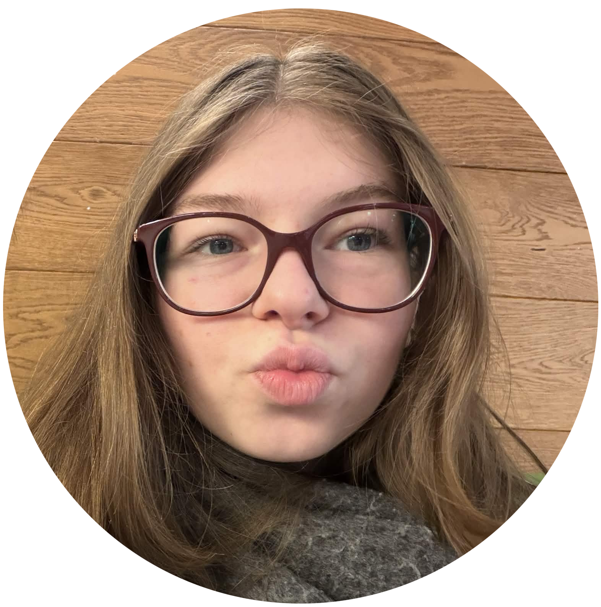

Right now I'm in my first year studying Multimedia & Creative Technology.
I've got a lot of interests such as:
listening to music, reading books, spending time with pets
BUT those are not the only things I love to do and I'm going to make you navigate in my world

Name : Yana Dechêne
Age : 18 years
Birthday : 22 june 2007
Place : Dilbeek, Belgium
ISFP‑T types, also known as Turbulent Adventurers, are gentle, creative, and highly sensitive individuals who feel emotions deeply and notice beauty in the world around them. They’re introverted and warm, preferring calm environments and expressing themselves through actions rather than words. The “T” (Turbulent) means they experience more self‑doubt and emotional intensity than ISFP‑A types, which makes them reflective, empathetic, and always striving to improve. They live in the moment, value authenticity, and often bring a quiet but powerful sense of kindness and artistry to everything they do.